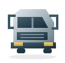

Motor și ungere
Componente motor, garnituri, pompe și piese pentru circuitul de ungere.
Solicită o ofertăPiese și accesorii pentru Ford Trucks. Catalogul prezintă grupele de produse; prețul, disponibilitatea și compatibilitatea se stabilesc prin ofertă.

Trimite codurile și cantitățile. Verificăm opțiunile originale și aftermarket disponibile pentru camionul tău Ford.
Cere ofertăComponente motor, garnituri, pompe și piese pentru circuitul de ungere.
Solicită o ofertăPiese pentru cutia de viteze, ambreiaj și transmisie, identificate după cod și aplicație.
Solicită o ofertăDiscuri, plăcuțe, etriere și componente pneumatice pentru întreținerea sistemului de frânare.
Solicită o ofertăPerne de aer, amortizoare și articulații pentru ansamblurile de suspensie și direcție.
Solicită o ofertăAlternatoare, demaroare, senzori și elemente de iluminare pentru camioane Ford.
Solicită o ofertăRadiatoare, pompe, termostate și componente pentru alimentarea motorului.
Solicită o ofertă
Oglinzi, trepte și elemente de cabină pentru reparații și întreținere.
Solicită o ofertăFiltre, curele și consumabile selectate pentru configurația camionului.
Solicită o ofertăPiese pentru generațiile și configurațiile Cargo, identificate după datele vehiculului.
Vezi piesele și cere ofertăF-MAX, F-MAX L, Midilli și LL / Lowliner. Aplicația se verifică individual.
Vezi piesele și cere ofertăCereri pentru gama rutieră, de construcții și F-LINE E, în funcție de configurație.
Vezi piesele și cere ofertăComponente pentru capete tractor Ford Trucks, fără a presupune compatibilitatea între modele.
Vezi piesele și cere ofertăPiese pentru camion și pentru echipamentul de basculare identificat.
Vezi piesele și cere ofertăCamioane de gunoi, cisterne de apă sau combustibil, pompieri și deszăpezire.
Vezi piesele și cere ofertăLa EKS LKW poți solicita piese pentru întreaga gamă de camioane și capete tractor Ford Trucks pentru revizii, întreținere și reparații. Oferta poate include componente originale și aftermarket. Producătorul, aplicația și disponibilitatea se precizează pentru fiecare cerere.
Pentru un kit de ambreiaj camioane și capete tractor Ford Trucks, pot fi necesare discul de ambreiaj, placa de presiune, rulmentul de presiune ori furca de debreiere. Configurațiile diferă: codul piesei și datele camionului sunt esențiale înainte de a alege un set. Poți solicita și componente pentru cutia de viteze și transmisie.
Discurile și plăcuțele de frână, etrierele, componentele pneumatice, pernele de aer, amortizoarele și articulațiile fac parte din grupele de piese pentru care poți cere o ofertă. Selectarea se face după aplicație, fără a presupune compatibilitatea între toate configurațiile Ford Trucks.
Pentru întreținere poți transmite o listă de filtre de ulei, aer și combustibil, garnituri, pompe sau componente ale sistemului de răcire. Menționează codurile existente și cantitățile. Dacă nu găsești referința în căutare, contactează-ne; baza de date nu acoperă toate piesele care pot fi solicitate.
Pentru cabină și caroserie poți cere oglinzi și geamuri de oglindă, faruri și lămpi, bare de protecție și elementele lor, aripi, trepte, grile, deflectoare, balamale, încuietori, macarale de geam și piese de ornament interior. La aceste piese contează partea de montaj (stânga sau dreapta), varianta de cabină și, la piesele vopsite, culoarea. O fotografie a piesei montate și a etichetei ajută la identificarea corectă.
Alternatoare, demaroare, senzori, comutatoare, relee, cablaje și elemente de iluminare se identifică cel mai sigur după codul de pe piesă și după conector. Dacă eticheta nu se mai citește, trimite o fotografie a mufei și a locului de montaj.
Caută un cod de piesă Ford sau solicită o ofertă de la EKS LKW București .
Furnizăm la cerere piese pentru întreaga gamă de camioane și capete tractor Ford Trucks: Cargo, F-MAX, F-LINE și vehicule pentru transport, construcții și aplicații speciale. Piesele sunt disponibile din stoc sau prin aprovizionare, în funcție de referință; disponibilitatea și termenul se confirmă în ofertă.
Putem procura la cerere și piese pentru echipamentele de suprastructură montate pe vehicule: compactoare de deșeuri, cisterne de apă sau combustibil, pompe și alte echipamente. Suprastructura poate proveni de la un alt producător decât Ford; identificăm piesa după marca, modelul, seria echipamentului și documentația disponibilă.